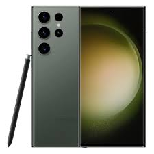
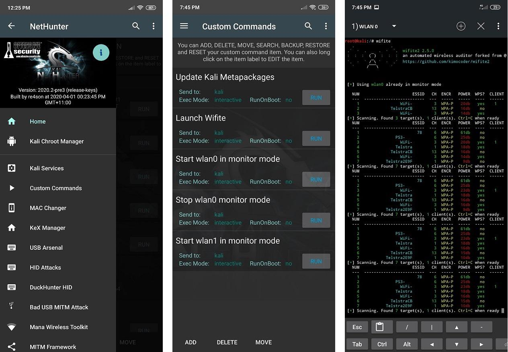
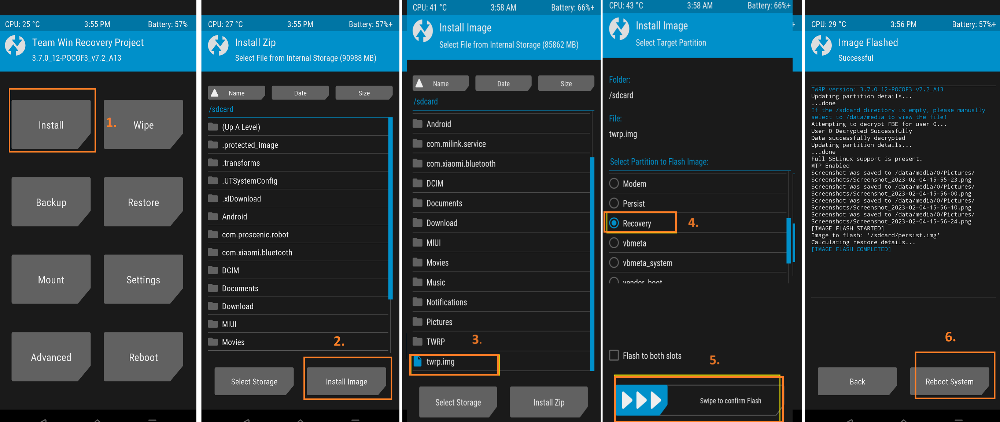
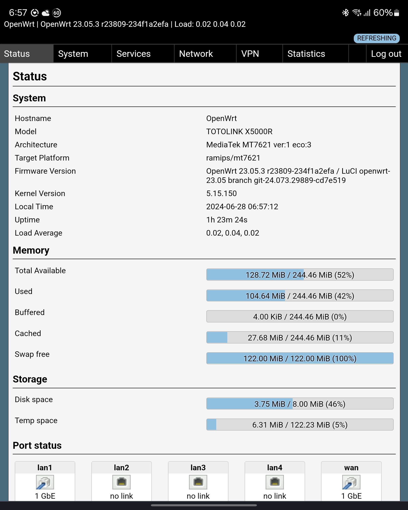
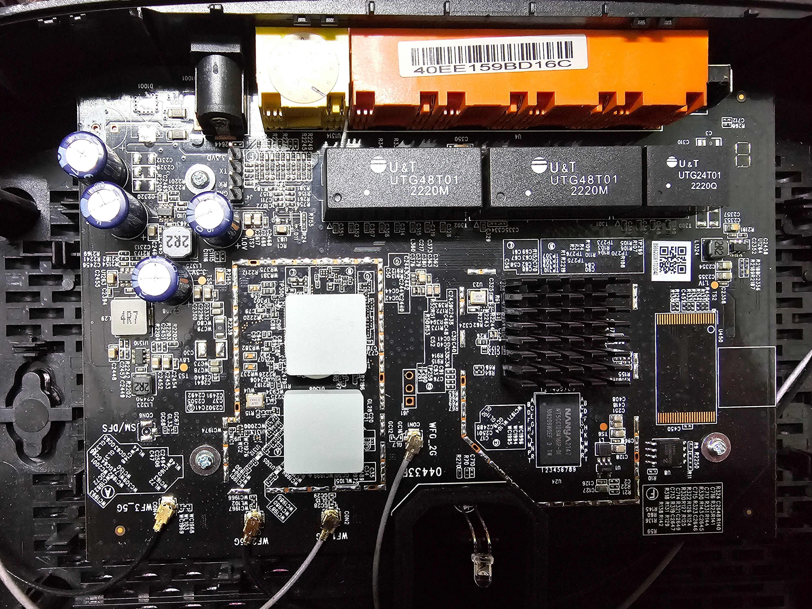
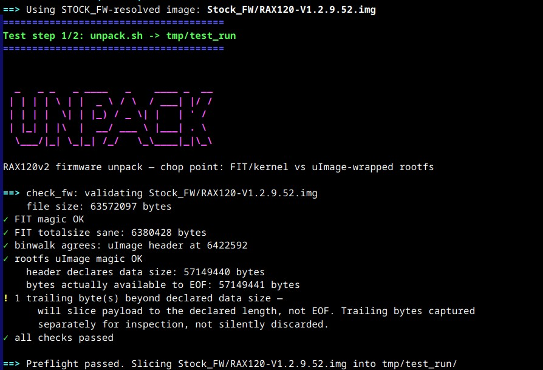
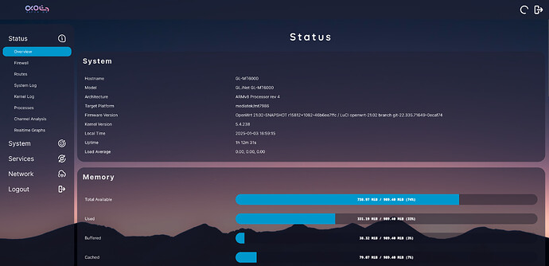

Galaxy S23 Ultra Custom Kernel (SM8550)
Maintained a forked SM8550 Android kernel for the Galaxy S23 Ultra, tracking stock/CLO and AOSP upstream changes and selectively cherry-picking useful community commits. Extended the Bash build script to automate compilation and optional KernelSU, KernelSU-Next, SukiSU-Ultra, APatch and SUSFS integration.
Bash Scripting
Linux Kernel
Advanced Git
C
View on GitHub
Samsung One UI Bootloader Downgrade Bypass
Documented a method for running an older One UI release without downgrading the device's fused bootloader. Adapted the UN1CA firmware repacking workflow, adjusted fstab and device-specific components, and combined compatible newer vendor blobs where required to boot the older system while keeping the newer bootloader.
Android OS
Firmware Modding
Scripting
View on GitHub
Galaxy S23 Ultra Guide
Galaxy Tab S8 Guide

Tab S8 Ultra Monolithic NetHunter Kernel
Built and maintained custom Galaxy Tab S8 kernel trees from Samsung Open Source and CodeLinaro sources across multiple Android releases. Developed de-GKI/monolithic variants by integrating Samsung and Qualcomm vendor drivers and porting community patches, with NetHunter-oriented builds adding wireless/USB support and container-related functionality.
Monolithic Kernel
Cybersecurity
C
View on GitHub
View XDA Post

TWRP Device Tree: Tab S8 Ultra
Created a TWRP 12.1 device tree for the Galaxy Tab S8 Ultra after the previously available public source was removed. Configured the device-specific recovery, Android build and kernel integration files, then built and tested recovery images on physical hardware.
Device Tree
Recovery Environment
SELinux
View on GitHub
Poco F3 Kali NetHunter & Custom Kernels
Maintained early custom-kernel forks for the Poco F3 (pre-GKI Linux 4.19), integrating KernelSU and Kali NetHunter-related patches. Worked with Kconfig, Makefiles and defconfig changes to build and test kernels with additional wireless-adapter functionality.
Kali NetHunter
Makefiles
Cybersecurity
View on GitHub

Totolink X5000R Custom OpenWrt Firmware
Diagnosed a boot-looping TOTOLINK X5000R through UART serial logs and identified an unsupported Zbit SPI-NOR flash chip. Recovered the router through U-Boot and TFTP/initramfs, then built and tested patched OpenWrt images with the required flash-chip support and documented the recovery process.
OpenWrt
Hardware Debugging (UART)
Networking
View on GitHub

TP-Link Archer AX53 Firmware Toolkit
Adapted an existing router-firmware toolkit for the Archer AX53's UBI/UBIFS flash layout, modifying its unpack and repack workflow for the device-specific firmware structure. Built and tested a QEMU/chroot environment that runs vendor ARM utilities to work with encrypted stock firmware while emulating the router's userspace.
UBI/UBIFS
Embedded Linux
QEMU/chroot
View on GitHub
View Forum Post

Netgear RAX120v2 Firmware Toolkit
Built a Linux-based toolkit for unpacking, modifying and rebuilding Netgear RAX120v2 stock firmware while preserving the vendor image structure required for installation through the stock web interface. Integrated Netgear/QSDK-derived utilities into repeatable scripts for root-filesystem extraction, repacking and validation.
Embedded Firmware
Bash
QSDK
View on GitHub
View Forum Post

Netgear RAX120v2 NSS OpenWrt Firmware
Maintained a custom OpenWrt build for the Netgear RAX120v2 with Qualcomm NSS hardware acceleration and device-specific fixes for wireless calibration and Aquantia Ethernet firmware. Added fan-control automation to scale cooling behaviour based on reported thermal readings.
OpenWrt
Hardware Acceleration
Bash
View on GitHub
View Forum Post